1. richmond:3

Other views: unmarked context, not rated
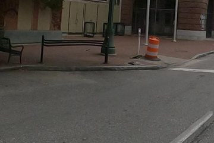
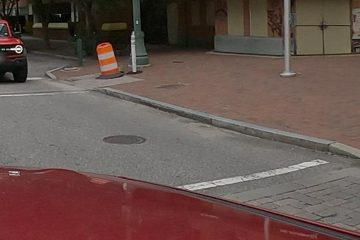
Each card is one ground-truth curb ramp that multi-view fusion did not deliver. Look at the large source view on the left: the green ring is where the reviewer clicked in that panorama. Answer one question: In the source view, is there a curb ramp at the ring? The smaller views on the right are other captures of the same corner, shown only as context, without a ring (a projected ring would often miss by metres), and nothing is rated from them.
Keyboard: Tab moves between cards' controls; arrow keys change the answer within a card. With focus anywhere in a card (not in a note), press Y, N or C to answer. Answers are saved in this browser as you go; Export writes them to a file.


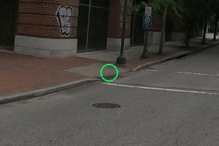
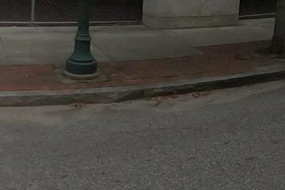
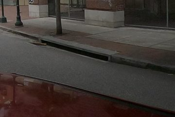

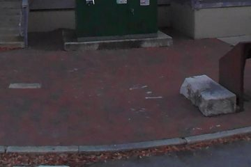
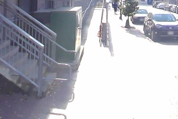
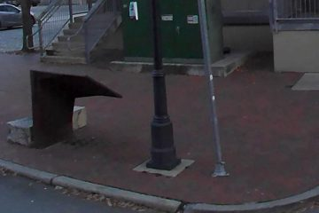
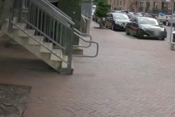
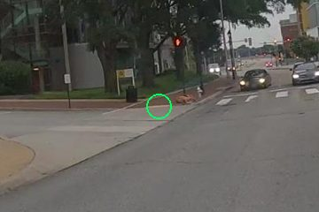
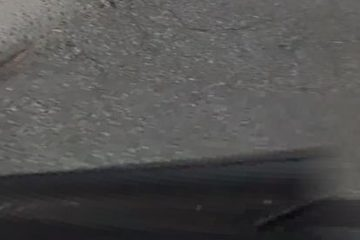
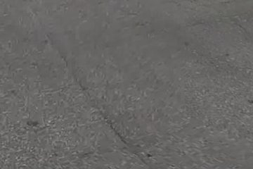
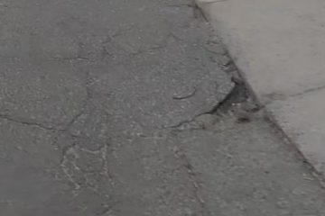
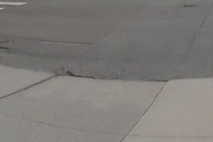
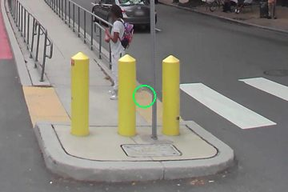
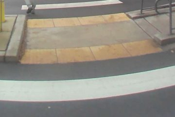
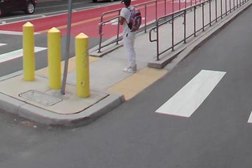
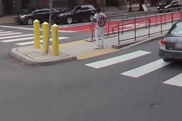
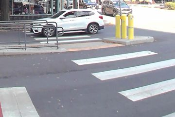

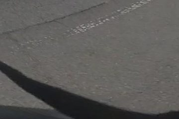
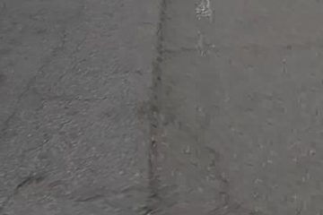
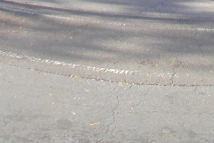
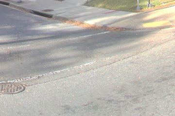

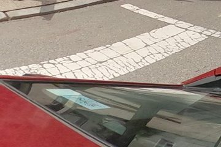
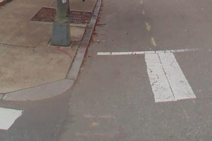
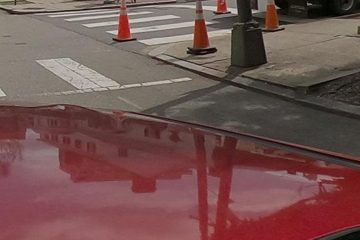
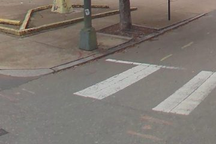

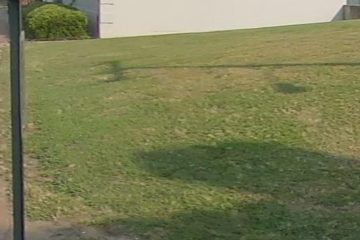
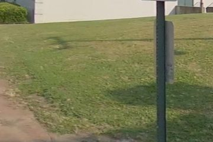
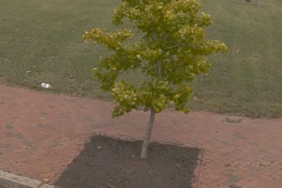
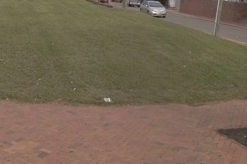
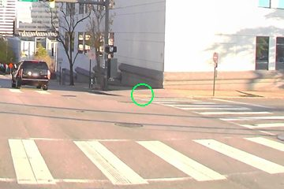
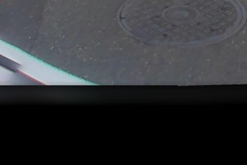
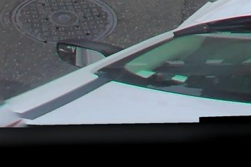
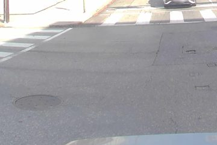
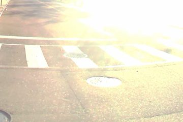
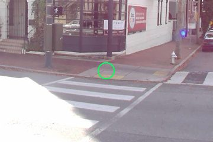
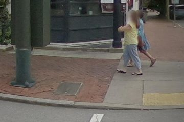
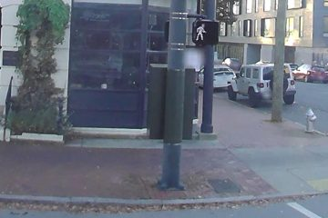
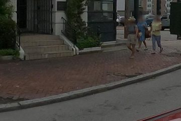
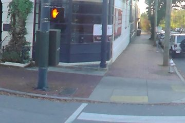
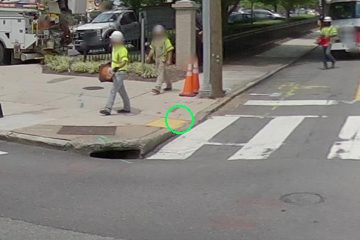
No other capture within 18 m.
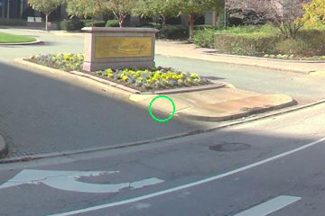
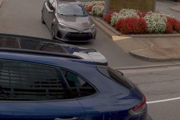
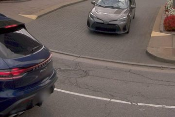
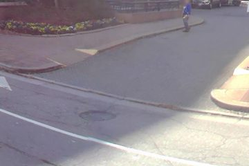
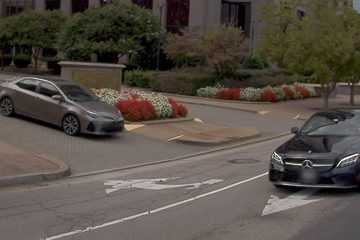

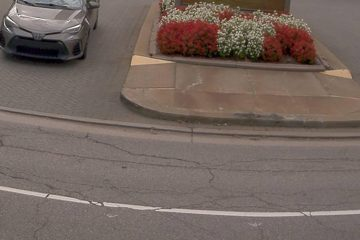
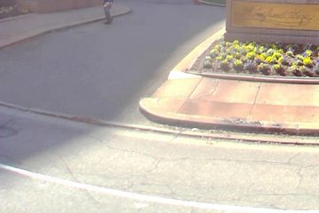
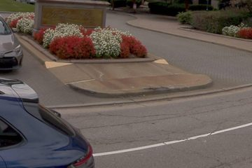


No other capture within 18 m.